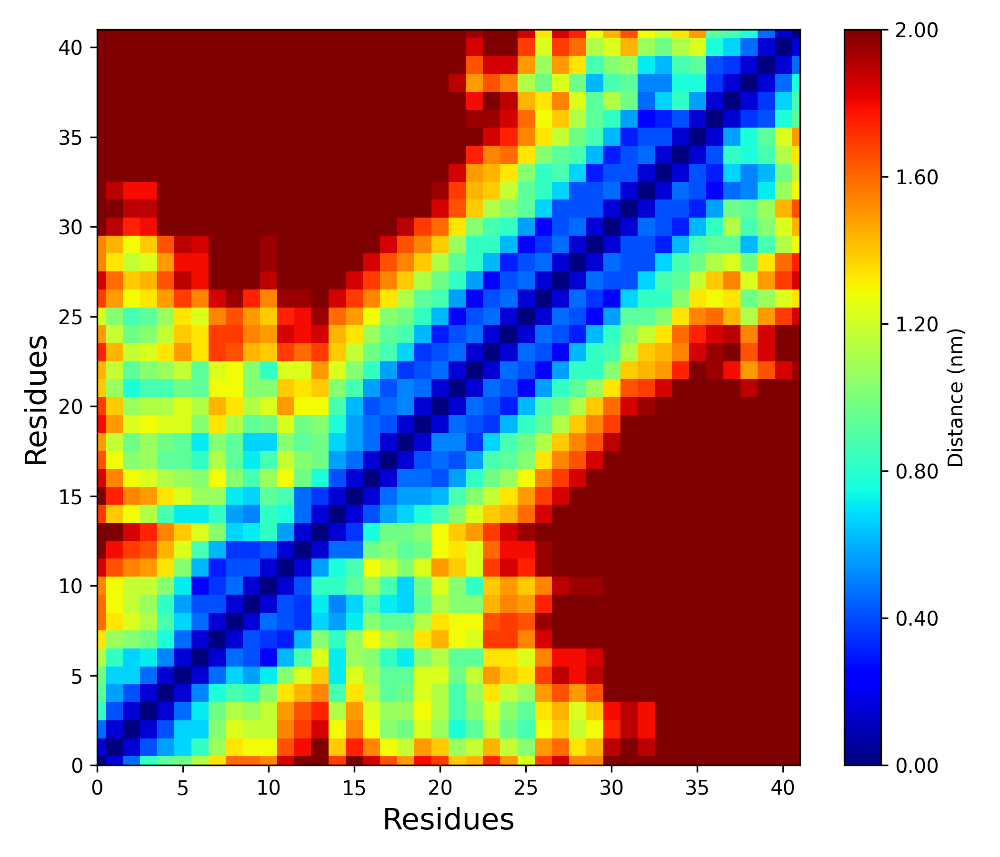

Inter-residue Distance Matrix
Overview
DynamiSpectra provides a detailed analytical tool to calculate and visualize inter-residue distance matrices within molecular systems during molecular dynamics simulations, using input data in .xpm file formats. This analysis allows researchers to examine the spatial relationships and dynamic proximities between residues of a single molecular entity, such as a protein, thereby offering insights into structural conformations and intra-molecular interactions.
The inter-residue distance matrix represents pairwise distances between residues across the entire molecular chain, enabling the identification of stable contacts, flexible regions, and conformational rearrangements.
Command line in GROMACS to generate .xvg files for the analysis:
gmx mdmat -f Simulation.xtc -s Simulation.tpr -mean Simulation.xpm -no Simulation.xvg
def distance_matrix_analysis(xpm_file_path, output_path=None, plot=True, config=None)

Interpretation guidance: The resulting distance matrix is represented as a colored map, where darker regions correspond to larger inter-residue distances and lighter regions indicate closer proximities. This visualization enables the identification of tightly packed or interacting residue pairs as lighter areas, while more distant residues appear as darker zones.
Complete code
import numpy as np
import matplotlib.pyplot as plt
import os
from matplotlib import cm
def read_xpm(file_path):
"""
Reads an XPM file and converts it to a numerical matrix.
Parameters:
-----------
file_path : str
Path to the XPM file.
Returns:
--------
matrix : np.ndarray
Matrix with numeric values representing the image.
"""
with open(file_path, 'r') as f:
lines = f.readlines()
# Extract only lines with pixel data
lines = [l.strip() for l in lines if l.strip().startswith('"')]
header_line = lines[0].strip().strip('",')
width, height, ncolors, chars_per_pixel = map(int, header_line.split())
# Build a color map from symbols to integers
color_map = {}
for i in range(1, ncolors + 1):
line = lines[i].strip().strip('",')
symbol = line[:chars_per_pixel]
color_map[symbol] = i - 1
# Create matrix from symbols
matrix = []
for line in lines[ncolors + 1:]:
line = line.strip().strip('",')
row = [color_map[line[i:i+chars_per_pixel]] for i in range(0, len(line), chars_per_pixel)]
matrix.append(row)
return np.array(matrix)
def plot_distance_matrix(matrix, save_path=None,
xlabel='Residues', ylabel='Residues',
label_fontsize=12,
title='', title_fontsize=14,
colorbar_label='Distance (nm)', max_distance=1.5,
cmap='jet'):
"""
Plots a normalized distance matrix with a custom colormap.
Parameters:
-----------
matrix : np.ndarray
Input distance matrix.
save_path : str
Path to save the plot (without extension).
xlabel, ylabel : str
Labels for x and y axes.
label_fontsize : int
Font size for axis labels.
title : str
Title of the plot.
title_fontsize : int
Font size of the title.
colorbar_label : str
Label for the colorbar.
max_distance : float
Max distance used to normalize the matrix.
cmap : str
Colormap used for the plot.
"""
# Normalize the matrix by max value
matrix_norm = matrix / np.max(matrix) * max_distance
# Create the plot
plt.figure(figsize=(7, 6))
plt.imshow(np.fliplr(matrix_norm), cmap=cmap, origin='lower', aspect='auto')
plt.gca().invert_xaxis()
# Set axis limits and ticks
plt.xlim(0, matrix.shape[1]-1)
plt.ylim(0, matrix.shape[0]-1)
plt.xticks(np.arange(0, matrix.shape[1], step=5))
plt.yticks(np.arange(0, matrix.shape[0], step=5))
# Add colorbar
cbar = plt.colorbar()
cbar.set_label(colorbar_label)
cbar.set_ticks(np.linspace(0, max_distance, 6))
cbar.set_ticklabels([f"{x:.2f}" for x in np.linspace(0, max_distance, 6)])
# Labels and title
plt.xlabel(xlabel, fontsize=label_fontsize)
plt.ylabel(ylabel, fontsize=label_fontsize)
plt.title(title, fontsize=title_fontsize)
# Adjust layout
plt.tight_layout()
# Save plot if path provided
if save_path:
base, _ = os.path.splitext(save_path)
plt.savefig(f"{base}.png", dpi=300)
plt.savefig(f"{base}.tiff", dpi=300)
print(f"Plots saved as {base}.png and {base}.tiff")
# Show the plot
plt.show()
def distance_matrix_analysis(xpm_file_path, output_path=None, plot=True, config=None):
"""
Main function to perform distance matrix analysis and plotting.
Parameters:
-----------
xpm_file_path : str
Path to the input XPM file.
output_path : str
Path (without extension) to save output plot.
plot : bool
Whether to display the plot.
config : dict (optional)
Plot customization dictionary with keys:
- xlabel, ylabel
- label_fontsize
- title, title_fontsize
- colorbar_label
- max_distance
- cmap
"""
if config is None:
config = {}
matrix = read_xpm(xpm_file_path)
if plot:
plot_distance_matrix(
matrix,
save_path=output_path,
xlabel=config.get('xlabel', 'Residues'),
ylabel=config.get('ylabel', 'Residues'),
label_fontsize=config.get('label_fontsize', 12),
title=config.get('title', ''),
title_fontsize=config.get('title_fontsize', 14),
colorbar_label=config.get('colorbar_label', 'Distance (nm)'),
max_distance=config.get('max_distance', 1.5),
cmap=config.get('cmap', 'jet')
)
return matrix